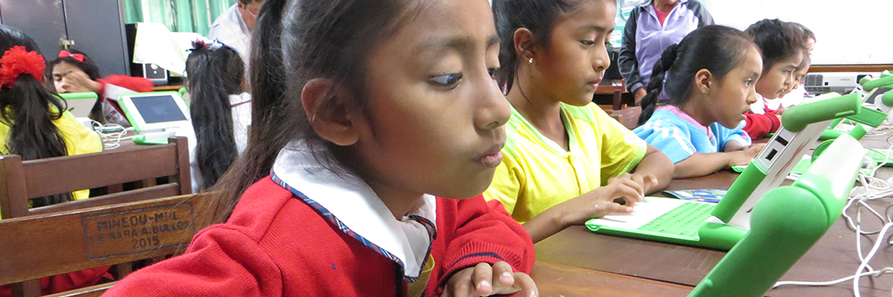

AULA DE INNOVACIONES DEL NIVEL PRIMARIO
El Aula de Innovaciones Pedagógicas del nivel Primario es un espacio excepcionalmente equipado que brinda a las niñas la oportunidad de adquirir habilidades clave en el uso de tecnologías de información y comunicación. Este entorno educativo de vanguardia está diseñado para fomentar el aprendizaje activo y la participación interactiva, preparando a las estudiantes para enfrentar los desafíos del mundo digital en constante evolución. Dentro de este aula, las niñas tienen acceso a equipos de última generación, como computadoras, tabletas y dispositivos multimedia, que les permiten explorar y aplicar herramientas digitales en su proceso de aprendizaje. Desde la programación y la creación de contenido multimedia hasta la investigación en línea y la comunicación colaborativa, las alumnas pueden experimentar y dominar una amplia gama de competencias digitales esenciales.
